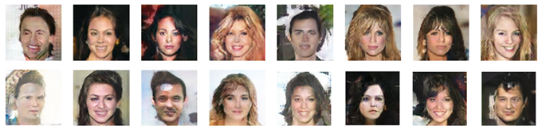

Automatic Coin Counter
This mobile app was made using React-Native and Expo Camera. YOLOv11 was used to implement object detection for detecting different coins and classifying them. It was trained using a US coing dataset in a variety of different settings in order to produce the best results. In order to connect the model to the frontend for getting the number of coins in the image, a proxy server was set up using Flask, which allowed the frontend in React-Native to communicate with the model written in Python.
Linguistify.co
This web app uses the power of AI to help new language learners feel more confident in their ability to pronounce new languages and connects people through the power of conversation. The backend was implemented in two parts: speech pronunciation assessment and speech pronunciation feedback. The speech pronunciation assessment was done using Microsoft Azure's Speech SDK and the results produced by the pronunciation assessment API were fed into the Groq API, which allowed us to leverage Groq's efficient LLMs to get feeback quickly. The frontend was created using Streamlit and the Google Cloud Text-to-Speech API was used to provide audio references for users. A docker image was then deployed to a container on Google Cloud, where it is currently hosted, allowing for PC and mobile use on the web.
Human Face Image Generator
Trained using the Large-scale CelebFaces Attributes (CelebA) Dataset, this model improves upon a baseline by generating images of real human beings that have less deformaties and static than those produced by the baseline model. This Generative Adversarial Network (GAN) was made with a focus on finetuning the hyperparameters in order to show how improving the hyperparameters could make a drastic difference in how a model performs, even when given the slightest of changes.
Image Rectification App
Developed using Java and Python, this app allows the user to reformat images to fit a certain perspective. JavaFX was used to build the front end and OpenCV and Numpy was utilized to create the algorithm that rectifies the given input image.
The Daily Danny Online Newspaper
As the backend developer, I integrated account and article creation and editing, login functionality, and image uploading utilizing MongoDB. Furthermore, I employed Node.js to handle API calls and backend tasks through a local server and devised and deployed a method to concurrently run both the client and the server. Svelte was also used to create a user interface that allowed both users and developers the make use of these backend services.

ShuffleBite Mobile App and Website
As the team lead and full-stack developer, I oversaw the development of ShuffleBite, which was created using React-Native, JavaScript, HTML, CSS, and BootStrap and utilizes the Yelp API to fetch restaurant information. Node.js was also applied to implement a proxy server used by the website for API calls.

Line Following and Object Detecting Robot
Using a Raspberry Pi Pico and a variety of sensors, I developed a line-following robot and reduced collisions by 50% by implementing object detection. The entire program was made using Python and external libraries that allowed me to utilize the hardware.

Word Guess Game
This command line game was made using Python, a random word API, and a dictionary API. It improves upon previously created word guessing games by introducing a wider variety of word choices with random lengths, which are all collected from the random word API. The dictionary API is then used to verify inputs, bringing everything together to make a fun, yet challenging, game that elevates the user experience.